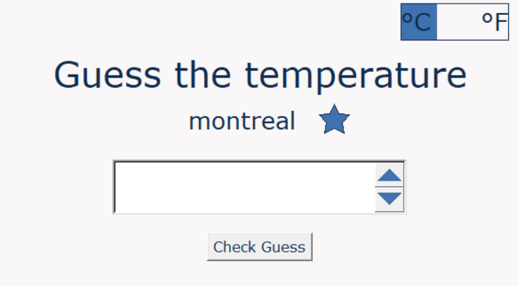
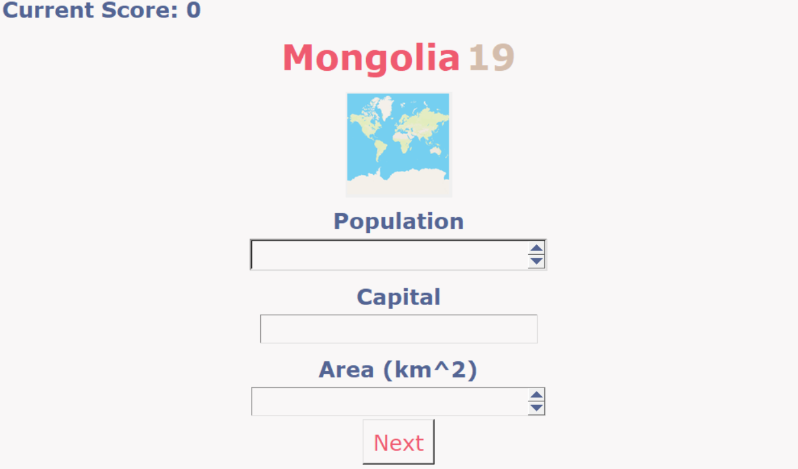

GolfBro

A web app for golfers to meet and chat in real time.
web development, APIs , authentication, databases
made with: nodeJs, EJS, express, MySQL, html, css, socket.IO, cloudinary
View projectWaypoints

A Unity asset that lets developers make GameObjects follow custom paths.
software design, clean coding
made with: Unity, C#
View projectLost in Hell

A game made for the GDM studios competition of winter 2025.
teamwork, software design
made with: Unity, C#
Play gameConnect4 AI

Final project of the Accelerated introduction to Machine Learning course.
Hands-on experience applying ML concepts in an interactive AI application.
made with: python, Fastapi, React, Vite, DaisyUI, Tailwind
View projectRush Hour
Rush Hour remake during CEGEP with level selection, collision detection, and drag-and-drop gameplay.
reading files, JavaFX event handling
made with: JavaFX, Java
check it outCrossword game

A crossword game remake made during CEGEP, with level selection and three themes.
reading files, JavaFX event handling and designing UI
made with: JavaFX, Java
check it outAim trainer

FPS minigame to train aim with extensive customization.
made with: Unity, C#
check it outChess logic
A fully functional chess game, playable by two players on the same computer
made with: Unity, C#
check it outTemperature guesser
Minigame to guess the temperature of cities, with a favorites list.
Using an API, file writing/reading
made with: Python, TKinter, OpenWeatherMapAPI
check it outgeographic quiz
Quiz on countries, cities, and capitals with maps and personalization.
Using an API, file writing/reading, geocoding.
made with: Python, TKinter, Geonames API
check it out